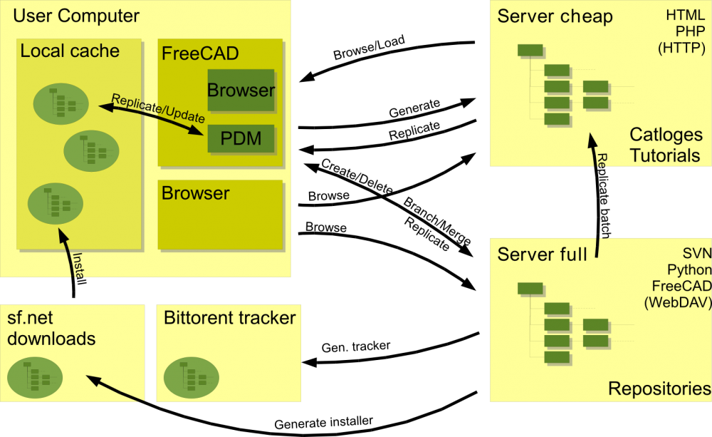

This is the project plan for the FreeCAD resource framework as part of the Development roadmap.
Purpose and principles
This is a software development project aimed to implement Product Data Management (PDM) capabilities. It's about implementing the bits and pieces needed.
The development steps are planned here and tracked in the Mantis issue tracking system to get a well formed change log: http://www.freecadweb.org/tracker/change_log.php
Outcome
- Revision control for large design projects.
- share work with others over the internet/intranet(s): Collaboration
- Online and offline catalogs with standard parts.
Brainstorming
What the others do
Here some links on comparable commercial products:
- PTC's PDMLink - "...when all product stakeholders are accessing a single, trusted, central data repository, manufacturers have the power to expertly manage all forms of digital product development data ... PDMLink is the ideal solution. Web-based for easy enterprise-wide access, this industry-proven product data management (PDM) system supports geographically dispersed teams while managing critical processes such as change/configuration management, and detailed design."
- Aras Corp. Aras PLM Software - They appear to offer Open Source solutions, this may be worth investigating further...
Use Cases
Provided by Charles:
Of course there will different sorts of people using this software for different reasons, and they may need different PDM solutions perhaps, but it would be good to investigate solutions that could be universal. I see the following different methods of development (there must be others too):
- Individual users - they will probably be a significant percentage of people working this way and they may be fairly self-contained, but revision control and branching still useful. Many of these people may be working in parts of the world where internet access is flaky or expensive, so they maybe working offline for long periods. Would be nice to make these individual projects very easily replicable by other people if it is a good piece of work - so the design can be evolved in multiple directions at once - lots of Darwinian evolution and faster exporing of the solution space
- Small teams of people working together - perhaps from the same education institution - but each individual may want the freedom to explore all aspects of the project rather than rigidly assigned a particular part of the project. We find it generally allows more options to be easily explored and gives greater flexibility.
- Wider open-source design projects - more members and geographically dispersed. The mirror of open-source software projects - where there does seem to be a general trend towards distributed systems (in fact Python Moved over to a DVCS last month). I see design and engineering going the same way for the same reasons. So I think there is all the more reason for us to think hard about how a distributed system could work in CAD - and if we solve this will have a big advantage over the commercial CAD vendors! I am convinced there is a solution (if we don't work it out, some other CAD system developer will!)
- More rigid hierarchical project - there may be some projects where the teams prefer this arrangement but I can only see this as being popular within companies.
The Blendswap website
Blendswap - in thier own words - is "...the place to find and share blends with the entire world. You make awesome blends, share them in the biggest repository of open source 3D models made with the awesome Open Source 3D suite Blender."
Blender is a very popular open source '3D content creation suite'.
Whilst not a CAD program, there are many parallels to be drawn and lessons to be learnt from the way Blender and it's community has gone about doing things.
Blendswap is an excellent example of an online repository. It's key features that I beleive we can learn from are:
- Provides detailed thumbnail images on the website. This allows people to freely browse and find content quickly.
- The models (blend files) come with clear license details (these details are also quicky viewable at a glance from the thumbnail, via a Creative Commons logo).
Possible revision control systems
It's only a small step to think of revision control the same way it's used in modern software development. There are basicly two different approaches to that matter:
Although the Use Cases demand a distributed revision control system, all the named has a major drawback. If you clone a repository all the previous versions will replicated to your computer. Which can, in the case of CAD data, be a very large Mb count. In contrast do the server centric systems only check out the head revision and therefore transfer relativly small amount of data.
Licensing
In a distributed internet project its needed that every document carries a clear license. Its even more importand if you think of catalogs. Catalog parts get used in projects (free and non free) and need there fore a clear license to make it usage clear. Since there different licensing systems out there, here a set of possible licenses for CAD files:
Creative Commons
The CC licenses are very popular for creative material, you can find the description here: http://creativecommons.org
ISO 16016
fraganaut01 give us a plug to another licensing system for CAD:
- Copyright by Provider (no more restrictions)
- Refer to protection notice ISO16016 (no special restriction)
- Confidential, for internal use only. Use only with confidentiality obligation. Refer to protection notice ISO16016
- Confidential, for internal use only. Refer to protection notice ISO16016
- Any dissemination only with the express approval of the originator
Design
All the revision controlled data, catalogs, tutorials and so on, have to have some kind of representation in FreeCAD. All this can be summarized under the name Resource. There have to be a class design to hold this kind of resource information and distinguish the different cases.
Architecture
This kine of service is per definition not only local to the user's machine. Its more up in the Cloud and implemented on different services on different servers. There is to distinguish four kind of servers:
- Cheap Server - LAMP
- Full Server (e.g. Ubuntu/Debian server)
- Download server - e.g. sf.net
- BitTorrent tracker
Thad leads to following scenario:

Organizing
Research
First of all the different alternatives of revision control systems have to be tested. To get hard numbers on how they behave on CAD data.
Design
A class design for the Resource framwork.
Next actions
- Build up test repositories on the Server and two local machines
- Test different use cases
{kind=link}